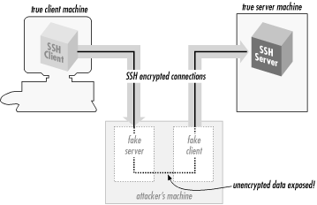

3.10. Threats SSH Can Counter
Like any security tool, SSH has particular
threats against which it is effective and others that it
doesn't address. We'll discuss the former first.
3.10.1. Eavesdropping
An
eavesdropper
is a network snooper who reads network traffic without affecting it
in any way. SSH's encryption prevents eavesdropping. The
contents of an SSH session, even if intercepted, can't be
decrypted by a snooper.
3.10.2. Name Service and IP Spoofing
If an attacker subverts your naming
service (DNS, NIS, etc.), network-related programs may be coerced to
connect to the wrong machine. Similarly, an attacker can impersonate
a host by stealing use of its IP address(es). In either case,
you're in trouble: your client program can connect to a false
server that steals your password when you supply it. SSH guards
against this attack by cryptographically verifying the server host
identity. When setting up a session, the SSH client validates the
server's host key against a local list associating server names
and addresses with their keys. If the supplied host key doesn't
match the one on the list, SSH complains. This feature may be
disabled in less security-conscious settings if the warning messages
get annoying. [
Section 7.4.3.1, "Strict host key checking"]
The SSH-2 protocol allows for including PKI certificates along with
keys. In the future, we hope that implementation of this feature in
SSH products along with more common deployment of PKI will ease the
burden of key management and reduce the need for this particular
security trade-off.
3.10.3. Connection Hijacking
An "active
attacker" -- one who not only can listen to network traffic
but also can inject his own -- can hijack a TCP connection,
literally stealing it away from one of its legitimate endpoints. This
is obviously disastrous: no matter how good your authentication
method is, the attacker can simply wait until you've logged in,
then steal your connection and insert his own nefarious commands into
your session. SSH can't prevent hijacking, since this is a
weakness in TCP, which operates below SSH. However, SSH renders it
ineffective (except as a denial-of-service attack). SSH's
integrity checking detects if a session is modified in transit, and
shuts the connection down immediately without using any of the
corrupted data.
3.10.4. Man-in-the-Middle Attacks
A
man-in-the-middle attack
is a particularly subtle type of active
attack and is illustrated in
Figure 3-8. An
adversary sits between you and your real peer (i.e., between the SSH
client and server), intercepting all traffic and altering or deleting
messages at will. Imagine that you try to connect to an SSH server,
but Malicious Mary intercepts your connection. She behaves just like
an SSH server, though, so you don't notice, and she ends up
sharing a session key with you. Simultaneously, she also initiates
her own connection to your intended server, obtaining a separate
session key with the server. She can log in as you because you used
password authentication and thus conveniently handed her your
password. You and the server both think you have a connection to each
other, when in fact you both have connections to Mary instead. Then
she just sits in the middle, passing data back and forth between you
and the server (decrypting on one side with one key and re-encrypting
with the other for retransmission). Of course, she can read
everything that goes by and undetectably modify it if she chooses.

Figure 3-8. Man-in-the-middle attack
SSH counters this attack in two ways. The first is server host
authentication. Unless Mary has broken into the server host, she is
unable to effect her impersonation, because she doesn't have
the server's private host key. Note that for this protection to
work, it is crucial that the client actually check the
server-supplied public host key against its known hosts list;
otherwise, there is no guarantee that the server is genuine. If you
connect for the first time to a new server and let
ssh accept the host key, you are actually open to
a man-in-the-middle attack. However, assuming you aren't
spoofed that one time, future connections to this server are safe as
long as the server host key isn't stolen.
The second protection SSH affords is to limit the authentication
methods vulnerable to this attack. The password method is vulnerable,
but public-key and hostbased/RhostsRSA are immune. Mary can't
discover the session key simply by observing the key exchange; she
must perform an active attack in which she carries out separate
exchanges with each side, obtaining separate keys of her own with the
client and server. In both SSH-1 and SSH-2,
[45] the key exchange is so
designed that if she does this, the session identifiers for each side
will be diferent. When a client provides a digital signature for
either public-key or trusted-host authentication, it includes the
session identifier in the data signed. Thus, Mary can't just
pass on the client-supplied authenticator to the server, nor does she
have any way of coercing the client into signing the other session
ID.
If you don't verify the server name/key correspondence, Mary
can still perform the man-in-the-middle attack, even though she
can't log in as you on the server side. Perhaps she can log
into her own account or another she has cracked. With some
cleverness, she might still deceive you long enough to do damage.
3.10.5. The Insertion Attack
Recall that SSH-1 uses a weak integrity mechanism. This weakness was
exploited in a successful attack discovered by Ariel Futoransky and
Emiliano Kargieman in June 1998; see
http://www.core-sdi.com/advisories/ssh-advisory.htm
for the gory details. This "
insertion" (or
"compensation") attack allows an adversary who can
perform an active network attack to insert arbitrary data into the
plaintext data stream bound for either the client or server. That is,
it allows insertion of encrypted data into the connection that then
successfully decrypts to the attacker's desired plaintext and
is delivered by SSH. The server direction is the most serious
problem, since this lets the attacker insert arbitrary commands into
a user's terminal session. Although not an especially easy
attack to mount, this is a serious vulnerability. The attack results
from composition properties of CRC-32 together with certain bulk
ciphers in certain modes. The attack can be avoided altogether by
using the 3DES cipher, which is immune.
SSH1 1.2.25, F-Secure SSH1 1.3.5, and later versions, as well as all
versions of OpenSSH, include the
crc32 compensation attack
detector, designed to detect and prevent this attack. The
detector renders the attack harder to mount, but doesn't
prevent it entirely. SSH-2 uses cryptographically strong integrity
checks to avoid such problems.
 |  |  |
| 3.9. Algorithms Used by SSH |  | 3.11. Threats SSH Doesn't Prevent |